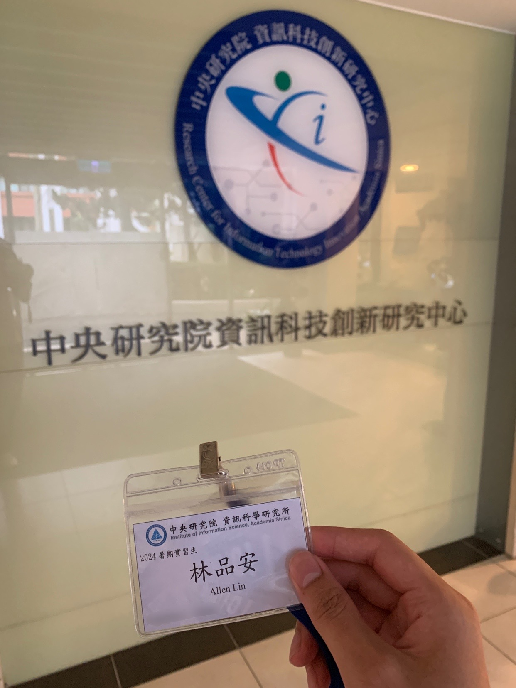
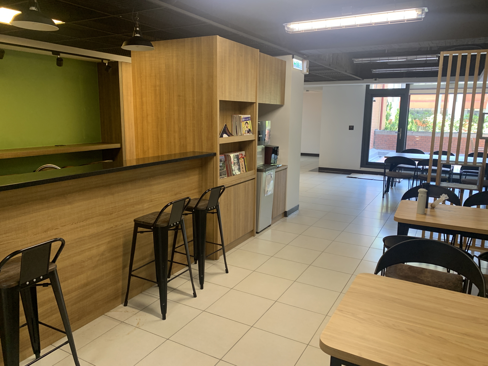
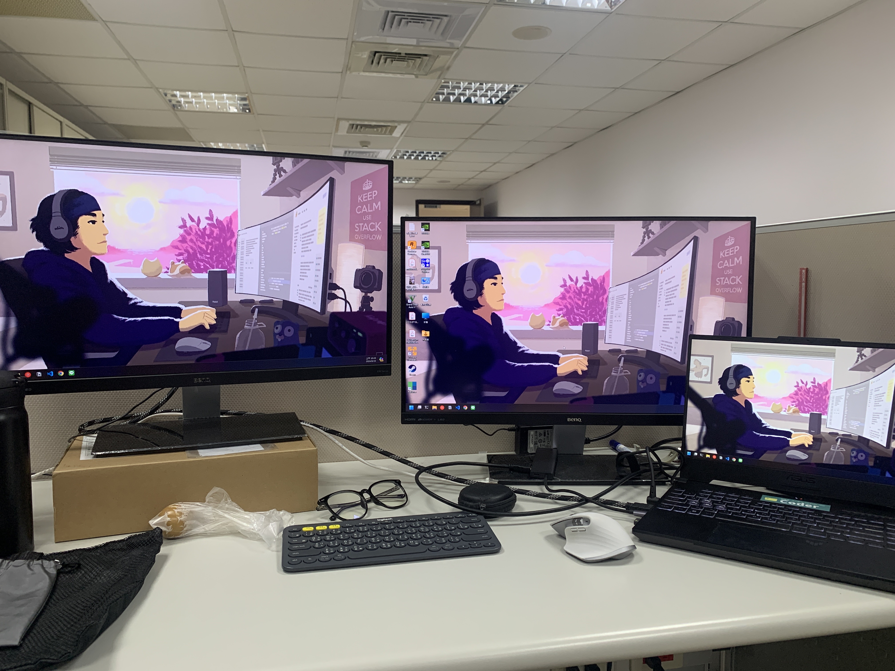
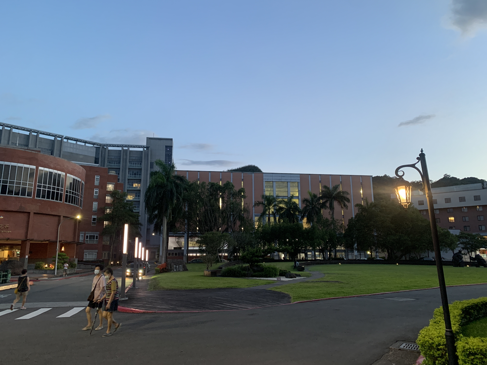
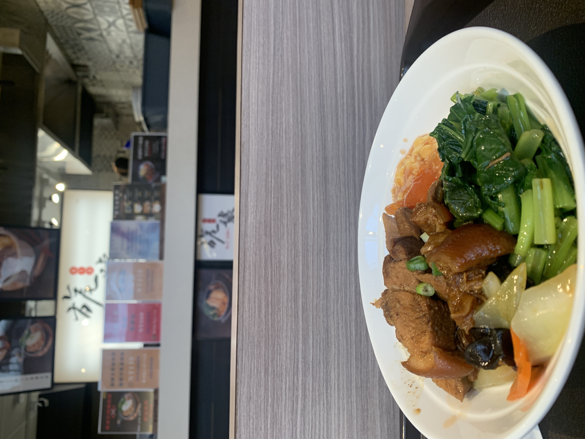
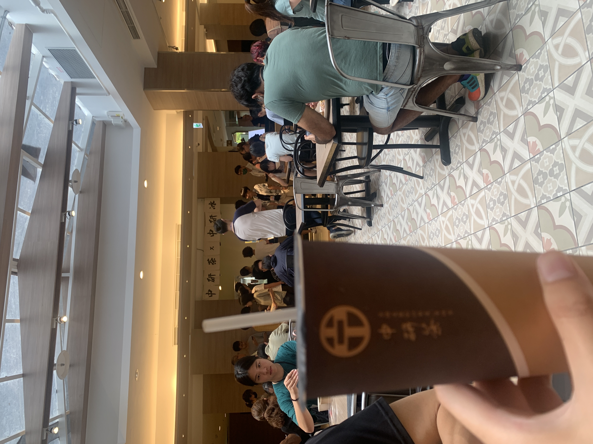
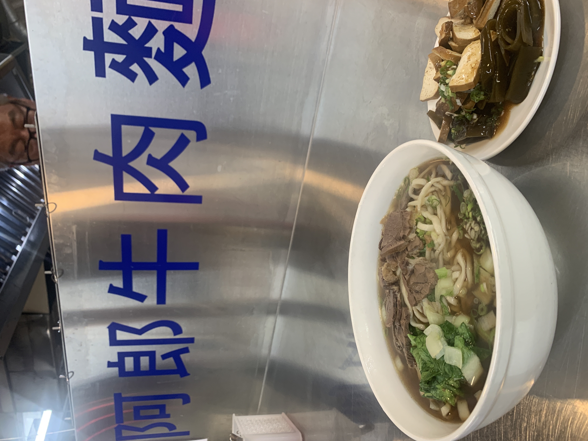

2024 中研院暑期實習
Posted on Sept. 7, 2024 by Allen
實習
中研院
單位
- 單位：資訊所(資創中心)
- 研究實驗室：LLM RAG 應用
- 指導教授：王**研究員 
申請時程
- 申請時程：大概是在每年的 2/15~3/15
- 放榜日期：4月多 (通常會有兩次的配對)
- 我自己是有先寄信給我感興趣的老師，然後再送出申請給中研院，我覺得就跟碩班找教授很像，網路上申請的網站都會列出各位老師的研究領域與 email
- 我是拿我之前推甄的個人簡歷直接交上去
工作內容、環境
- 進實驗室的頻率：這取決於你的老師與實驗室風氣，有些實驗室規定實習生一定要每天到，甚是要打卡，但我的實驗室基本上都 remote 我們只要 on-site 報告就好
- meeting 次數：這也是取決於你的老師，我的是兩個禮拜一次報告給老師及所有實驗室的人，但我有一個學長 RA(Research Assistant) 主要帶我們做專案的需要每個禮拜開會(這邊的開會就是遠端)
- 研究方向：全部實習生都是圍繞在 LLM 上研究，但我們有分四個 team 分別由各個學長帶，一開始老師會要我們填志願看自己最有興趣甚麼領域，最後由學長自己挑人，這邊不用害怕沒事情做，基本上有學長帶都會有事情要做
-
中研院資源(每一個實驗室不一定一樣):
- VPN 使用內部系統：基本上應該都會幫實習生申請 VPN 帳號，這樣你就可以遠端連進中研院使用資源，如果有小組開會可以自己上內部系統借會議室，然後可以拿沒用到的悠遊卡去總務組辦通行證，這樣如果假日或是超過晚上7點有門禁時一樣進得去實驗室或會議室
- GPU server：我的實驗室因為是做 LLM 所以有好幾張卡可以跑(等級有到 V100)
- 個人電腦：我的實驗室沒有提供電腦(可能因為都 remote)，只有螢幕可以使用，但我看別人的實驗室好像有人會提供
- 講座：基本上院內會辦許多講座可以參加，基本上報名都可以去，通常都會是各項領域的大佬(by the way YOLO 是中研院資訊所發明的喔)
- 公共空間：每一層樓都會有公共空間，也有冰箱微波爐那些，甚至有咖啡機，所以如果要 meeting 不想在實驗室裡面可以考慮到公共空間，冰箱我看都有人冰自己的飲料跟水過，所以應該是都可以用


生活機能
- 運動場：中研院有健身房、籃球場、網球場、慢跑場，健身房去一次只要 $50 不限時間拿證件就可以使用有密碼的置物櫃，非常方便 
- 住宿方面：中研院是跟中華科大借宿舍來住的，所以錄取實習生後會要你填是否住宿，這邊男生會分成雙人房或四人房，因為台北南港附近其實短期租屋其實不好找且也不便宜，我自己是有抽到雙人房的暑期住宿(宿舍有點髒，感覺沒人在打掃，所以要有心理準備，且男生宿舍要走一個很陡的坡上去然後雙人房還要再爬到5樓QQ)
- 交通方面：中研院有提供接駁交通車，可以到臺清交學校，我記得是只要出示中研院的實習證跟學生證應該就可以搭乘，每天也滿多班的，所以如果不想住宿舍的可以考慮看看
- 食物方面：中研院有員工餐廳，推薦可以吃腿庫飯$120，自助餐最爽可以吃到很多菜然後價錢大概也是 $120 內 ，所以CP值很高，中研院內部也有萊爾富、路易莎、摩絲漢堡記得要出示實習證通常可以打9折😎，中研院內部吃膩之後可以去附近的中研市場吃吃吃，但因為配合市場時間只到開到下午 2 點(推薦你超級便宜的牛肉麵只要 $70)


